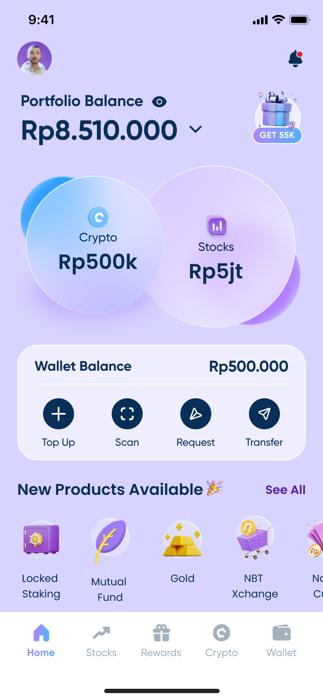
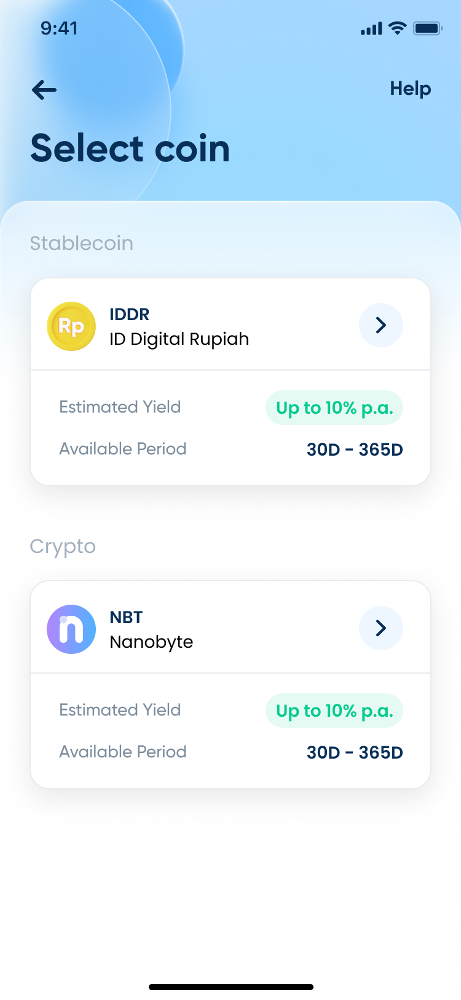
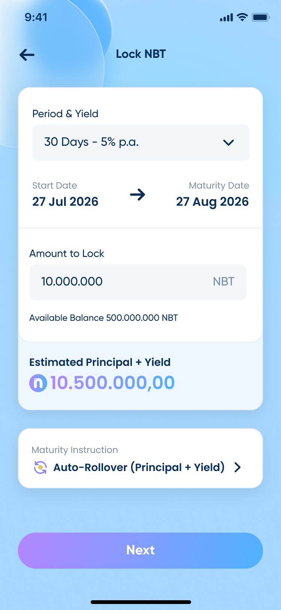
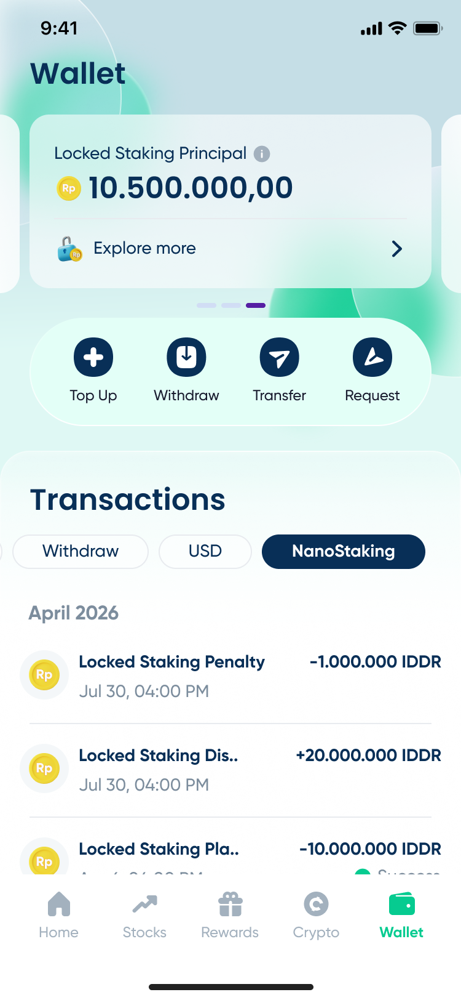

Nanovest Crypto Locked Staking
A third thing to do with a balance besides trade it or let it sit: lock it for a fixed term, at a yield you see before you commit to it.
Visit nanovest.io- Client
- Sector
- Role
- Team
- Period
- Surface

Overview
A Nanovest balance could do two things before this: move, as a trade, or wait, doing nothing, in a wallet. Locked staking is the third option: commit an amount of IDDR or NBT for a term you choose, in exchange for a yield that's fixed before you lock, not somewhere in a rate table after.
Scope
- 01Competitive teardown
- 02Yield & term modeling with the crypto team
- 03Information architecture
- 04User flows
- 05Wireframes
- 06Interface design
- 07Confirmation & PIN flow
- 08Edge & error states
- 09Prototyping
- 10Design QA
Problem
A balance could only move or wait. Nothing in between.
Trading was the only way a Nanovest balance grew, and a wallet was the only place it could rest; nothing rewarded someone for committing to *time* instead of a *position*. Competitor staking screens existed, but most buried the yield inside a rate table, let the term quietly change the number without saying so on the same screen, or asked for a commitment before showing what came out the other end.
For someone putting real money behind a number they can't watch move day to day, that gap between committing and understanding is where trust gets spent, not earned.
Approach
One decision per screen, the number recalculating before you commit to it.
Coin comes before term. Stablecoin (IDDR) and crypto (NBT) sit as two cards, each stating its own estimated yield and available window up front, so the choice that changes everything downstream gets made before an amount is ever typed in.
Term and amount live on one screen, not two. Changing the period redraws the estimated principal and yield in place, start date and maturity date read as one line instead of two facts to reconcile by hand, and the maturity instruction, auto-rollover or release, gets set here, before confirmation, not assumed afterward.
PIN closes a decision instead of opening a new one. Everything it locks in was already visible on the screen before it: amount, term, yield, maturity. So entering it reads as *sealing* a choice, not restarting the form.
Screens




Results
Deliverables